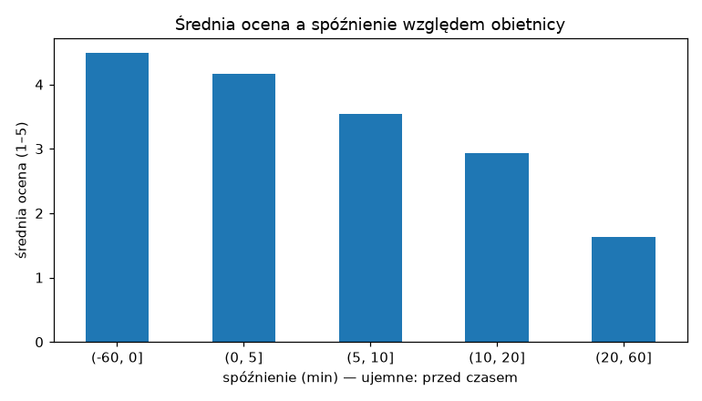
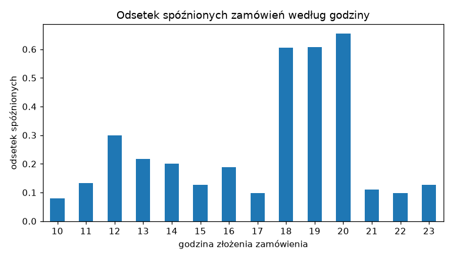

Zajęcia 6#
Mini-projekt — od pytania do raportu#
Przez pięć zajęć poznawałeś narzędzia jedno po drugim: wczytywanie, czyszczenie, wykresy, grupowanie, łączenie, budowanie cech. Każde zadanie ćwiczyło jedno z nich. W pracy nikt nie powie Ci, którego narzędzia użyć — dostaniesz pytanie, kilka plików i termin. Dziś robimy dokładnie to: mini-projekt analityczny od pytania do raportu, z nowymi danymi, których jeszcze nie widziałeś.
Nowych funkcji prawie nie będzie. Nowe jest to, w jakiej kolejności i po co sięgasz po te, które znasz — i jak na końcu zamienić tabelki w kilka zdań, które przeczyta ktoś, kto nie zna Pythona.
Po dzisiejszych zajęciach będziesz w stanie:
- zamienić ogólne pytanie biznesowe na pytanie, na które da się odpowiedzieć liczbami,
- przeprowadzić diagnozę nowego zbioru i zaplanować czyszczenie,
- połączyć kroki z poprzednich zajęć w jeden uporządkowany notatnik,
- odróżnić wynik, który odpowiada na pytanie, od wyniku, który tylko jest ciekawy,
- napisać krótki raport z wnioskami, liczbami, rekomendacją i ograniczeniami.
Przykłady z zajęć w Colabie
Cały materiał z tej strony jest też w gotowym notatniku — z kodem do uruchomienia. Otwórz go i uruchamiaj komórki po kolei, czytając materiał. Żeby zachować swoje zmiany, zapisz kopię: Plik → Zapisz kopię na Dysku.

Gdzie jesteśmy
Dziś cały workflow z pierwszych zajęć naraz: pytanie, dane, czyszczenie, eksploracja, komunikacja. Pomijamy tylko modelowanie — to za godzinę na Uczeniu głębokim, gdzie na tych samych danych zbudujesz sieć przewidującą czas dostawy.
Plan na dziś#
| Blok | Czas |
|---|---|
| Jak wygląda mini-projekt | 5 min |
| Pytanie i diagnoza danych | 8 min |
| Czyszczenie i łączenie | 8 min |
| Cechy i analiza | 12 min |
| Wnioski i raport | 7 min |
| Ściągawka | 3 min |
| Zadanie 6 | 45 min |
Jak wygląda mini-projekt#
Nowa firma: MeritoEats#
MeritoEats to platforma dostaw jedzenia w Warszawie. Klient zamawia w aplikacji, aplikacja pokazuje mu obiecany czas dostawy, restauracja gotuje, kurier wiezie. Po wszystkim klient może (ale nie musi) wystawić ocenę od 1 do 5. Średnia ocena spada od tygodni i dyrektor operacyjny chce wiedzieć dlaczego.
Mamy dwa pliki z października: dziennik zamówień i słownik restauracji.
Notatnik jako raport#
Notatnik z projektu czyta potem ktoś inny — prowadzący, szef, Ty sam za miesiąc. Dlatego układasz go w stałe sekcje, każdą z nagłówkiem w komórce tekstowej:
| Sekcja | Co w niej jest | Narzędzia z zajęć |
|---|---|---|
| 1. Pytanie | jedno–dwa zdania: co chcemy wiedzieć i po co | — |
| 2. Dane | skąd są, ile wierszy, co znaczą kolumny, diagnoza | 1, 2 |
| 3. Czyszczenie | co poprawiasz i dlaczego — z liczbą usuniętych wierszy | 2 |
| 4. Łączenie i cechy | jakie tabele, jakie nowe kolumny | 4, 5 |
| 5. Analiza | tabele i wykresy, które odpowiadają na pytanie | 3, 4 |
| 6. Wnioski | odpowiedź, liczby, rekomendacja, ograniczenia | — |
Najważniejsza zasada: każda komórka z kodem ma służyć odpowiedzi na pytanie. Jeśli nie wiesz, po co liczysz jakąś tabelę, nie liczysz jej.
Pytanie i diagnoza danych#
Z ogólnego pytania — mierzalne#
„Dlaczego klienci są niezadowoleni?" to dobre pytanie dla dyrektora, ale złe dla analityka: nie wiadomo, co policzyć. Zamieniamy je na pytanie, na które odpowie tabela:
Od czego zależy ocena zamówienia — od długości dostawy, odległości, wartości zamówienia czy od tego, czy dotrzymaliśmy obietnicy?
Teraz wiadomo, czego szukać: kolumny ocena i jej związku z kilkoma innymi.
Diagnoza#
Zanim cokolwiek policzysz, sprawdzasz, co dostałeś — dokładnie tak jak na zajęciach 2:
import pandas as pd
import matplotlib.pyplot as plt
URL_PAZ = "https://kubzal.github.io/wsb-merito/semestr_zimowy_2026_27/data_science_w_pythonie/dane/zamowienia_pazdziernik_2026.csv"
URL_REST = "https://kubzal.github.io/wsb-merito/semestr_zimowy_2026_27/data_science_w_pythonie/dane/restauracje_2026.csv"
zam = pd.read_csv(URL_PAZ)
print(zam.shape)
zam.head(3)
(1851, 11)
zamowienie_id data_godzina restauracja_id dzielnica odleglosc_km liczba_pozycji wartosc_zl pogoda obiecany_czas_min czas_dostawy_min ocena
0 Z00001 2026-10-01 10:03 R15 Mokotów 2.2 1 39.23 sucho 35 29 NaN
1 Z00002 2026-10-01 10:08 R17 ŚRÓDMIEŚCIE 2.2 4 96.37 sucho 35 25 NaN
2 Z00003 2026-10-01 10:12 R27 Mokotów 2.0 4 174.74 sucho 30 26 4.0
duplikaty: 21
zamowienie_id 0
data_godzina 0
restauracja_id 0
dzielnica 0
odleglosc_km 0
liczba_pozycji 0
wartosc_zl 0
pogoda 0
obiecany_czas_min 0
czas_dostawy_min 0
ocena 1035
dtype: int64
różnych dzielnic: 40
count 1851.0
mean 39.3
std 54.2
min -12.0
25% 29.0
50% 36.0
75% 44.0
max 1440.0
Name: czas_dostawy_min, dtype: float64
Trzy problemy i jeden fałszywy alarm:
- duplikaty — kilkadziesiąt zamówień zapisanych dwa razy,
- dzielnice — MeritoEats działa w 8 dzielnicach, a różnych wartości jest
- To pisownia:
"ŚRÓDMIEŚCIE","Mokotów "ze spacją, - czas dostawy — minimum ujemne, maksimum 1440 minut, czyli równa doba. To błędy systemu, nie dostawy,
- braki w ocenie to nie błąd. Ponad połowa klientów po prostu nie wystawia ocen. Tych braków nie uzupełniamy — średnia z wymyślonych ocen nic nie znaczy. Liczymy na tych, którzy ocenili, i piszemy o tym w ograniczeniach.
Czyszczenie i łączenie#
Czyszczenie z licznikiem#
Przy każdym kroku zapisujesz, ile wierszy ubyło — w raporcie musisz umieć powiedzieć, co wyrzuciłeś:
przed = len(zam)
zam = zam.drop_duplicates()
print("duplikaty: ", przed - len(zam))
zam["dzielnica"] = zam["dzielnica"].str.strip().str.title()
przed = len(zam)
zam = zam[zam["czas_dostawy_min"].between(1, 300)]
print("błędne czasy: ", przed - len(zam))
zam["data_godzina"] = pd.to_datetime(zam["data_godzina"])
print("zostało: ", len(zam), "| dzielnic:", zam["dzielnica"].nunique())
Próg 300 minut to decyzja, nie prawda objawiona — dostawa trwająca 5 godzin też byłaby podejrzana, ale żadnej takiej nie ma: wartości są albo do ok. 90 minut, albo absurdalne (455, 720, 1440). Taką decyzję zapisujesz w komórce tekstowej jednym zdaniem.
Łączenie ze słownikiem restauracji#
rest = pd.read_csv(URL_REST)
print(rest.shape)
przed = len(zam)
zam = zam.merge(rest, on="restauracja_id", how="left")
print(przed, "→", len(zam))
print("bez kuchni:", zam["kuchnia"].isna().sum(), "| restauracja:",
zam.loc[zam["kuchnia"].isna(), "restauracja_id"].unique().tolist())
Liczba wierszy się zgadza, ale jedna restauracja — R17 — nie ma wpisu
w słowniku (dział partnerów wyjaśnia: zakończyła współpracę i ktoś ją
usunął). Jej zamówienia są prawdziwe, więc ich nie wyrzucamy — oznaczamy
kuchnię jako nieznaną:
Cechy i analiza#
Cechy, które odpowiadają na pytanie#
Pytanie dotyczyło m.in. dotrzymania obietnicy, a takiej kolumny nie ma. Budujemy ją jak na zajęciach 5:
zam["godzina"] = zam["data_godzina"].dt.hour
zam["spoznienie_min"] = zam["czas_dostawy_min"] - zam["obiecany_czas_min"]
zam["spoznione"] = (zam["spoznienie_min"] > 5).astype(int)
zam[["obiecany_czas_min", "czas_dostawy_min", "spoznienie_min", "spoznione"]].head(3)
spoznienie_min ujemne oznacza, że jedzenie przyjechało przed czasem.
Za spóźnione uznajemy zamówienia ponad 5 minut po obietnicy — kilka minut
klient wybacza. To znowu decyzja, którą zapisujesz.
Co wiąże się z oceną#
print("ocenionych zamówień:", zam["ocena"].notna().sum(), "z", len(zam))
zam[["czas_dostawy_min", "odleglosc_km", "wartosc_zl", "spoznienie_min"]].corrwith(zam["ocena"]).round(3)
ocenionych zamówień: 797 z 1816
czas_dostawy_min -0.536
odleglosc_km -0.096
wartosc_zl -0.115
spoznienie_min -0.714
dtype: float64
corrwith sam pomija braki — liczy tylko na zamówieniach z oceną.
Najmocniej z oceną wiąże się spóźnienie (−0.71), ale czas dostawy też całkiem
mocno (−0.54). Czy to dwa różne powody, czy jeden? Spóźnione zamówienia są
przecież zwykle też długie. Zobaczmy ocenę w przedziałach spóźnienia:
przedzialy = pd.cut(zam["spoznienie_min"], bins=[-60, 0, 5, 10, 20, 60])
zam.groupby(przedzialy, observed=True)["ocena"].agg(["count", "mean"]).round(2)
count mean
spoznienie_min
(-60, 0] 300 4.49
(0, 5] 189 4.16
(5, 10] 145 3.54
(10, 20] 152 2.93
(20, 60] 11 1.64
zam.groupby(przedzialy, observed=True)["ocena"].mean().plot(
kind="bar", title="Średnia ocena a spóźnienie względem obietnicy")
plt.xticks(rotation=0)
plt.xlabel("spóźnienie (min) — ujemne: przed czasem")
plt.ylabel("średnia ocena (1–5)")

Dopóki obietnica jest dotrzymana, ocena trzyma się ok. 4.5. Każde kolejne minuty spóźnienia kosztują coraz więcej. Ostatni przedział to tylko 11 ocen — kierunek jest jasny, ale liczby 1.64 nie warto cytować z dokładnością do setnych. A teraz kluczowy test — zamówienia dowiezione na czas, ale różnej długości:
na_czas = zam[zam["spoznienie_min"] <= 0]
na_czas.groupby(pd.cut(na_czas["czas_dostawy_min"], bins=[0, 30, 40, 60]),
observed=True)["ocena"].agg(["count", "mean"]).round(2)
Ta sama ocena, niezależnie od tego, czy dostawa trwała 25 czy 45 minut. Klienci nie karzą za długą dostawę, tylko za niedotrzymaną obietnicę. Korelacja z czasem dostawy była „pożyczona" od spóźnień — długie dostawy częściej się spóźniają.
Skąd się biorą spóźnienia#
Skoro problemem są spóźnienia, naturalne kolejne pytanie — kiedy się zdarzają:
zam.groupby("godzina")["spoznione"].mean().plot(
kind="bar", title="Odsetek spóźnionych zamówień według godziny")
plt.xticks(rotation=0)
plt.xlabel("godzina złożenia zamówienia")
plt.ylabel("odsetek spóźnionych")

W wieczornym szczycie (18–20) spóźnia się 6 zamówień na 10, w pozostałych godzinach — najwyżej co trzecie, najczęściej co dziesiąte. Aplikacja obiecuje ten sam czas o 15:00 i o 19:00, choć o 19:00 kuchnie i ulice są zapchane.
Ciekawe to nie to samo co ważne
W trakcie analizy znajdziesz mnóstwo rzeczy: że w weekendy zamawia się więcej, że sushi jest najdroższe, że Mokotów zamawia najczęściej. Jeśli to nie odpowiada na pytanie — nie trafia do wniosków. Raport z dwudziestoma ciekawostkami to raport, z którego nikt nic nie zapamięta.
Wnioski i raport#
Pięć elementów dobrego wniosku#
- Odpowiedź w pierwszym zdaniu. Dyrektor może nie doczytać do końca.
- Liczby — konkretne, zaokrąglone, z liczebnością, gdy grupa jest mała.
- Mechanizm — co z czego wynika, jeśli to wiadomo.
- Rekomendacja — co zrobić.
- Ograniczenia — czego dane nie mówią.
Zamiast:
Korelacja oceny ze
spoznienie_minwynosi −0.714, a zczas_dostawy_min−0.536. Groupby po godzinie pokazał max 0.66 dla godziny 20.
piszesz:
Oceny spadają przez niedotrzymane obietnice, a nie przez długie dostawy. Zamówienia dowiezione na czas mają średnią ocenę 4.5 niezależnie od tego, czy jechały 25, czy 45 minut. Już 5–10 minut spóźnienia obniża ocenę do 3.5, a 10–20 minut — do 2.9. Najwięcej spóźnień jest w wieczornym szczycie (18–20), gdy spóźnia się 6 zamówień na 10. Rekomendacja: w godzinach szczytu aplikacja powinna obiecywać dłuższy czas — klient chętniej poczeka 45 minut, jeśli tyle mu obiecano, niż 35, gdy obiecano 30. Ograniczenia: ocenia tylko 44% klientów, a dane obejmują jeden miesiąc.
Bez nazw kolumn, bez kodu, z jedną liczbą na każde twierdzenie.
Korelacja to nie przyczyna — ale tu mamy mechanizm
Sam wynik „spóźnione zamówienia mają gorsze oceny" mógłby mieć inne wyjaśnienie (np. spóźniają się konkretne restauracje, które gotują gorzej). Test z zamówieniami dowiezionymi na czas wzmacnia nasz wniosek, ale go nie dowodzi. Pewność dałby dopiero eksperyment: części klientów aplikacja obiecuje dłuższy czas, części — krótszy, i porównujemy oceny. Takie testy firmy robią na co dzień (testy A/B).
Ściągawka#
| Etap | Pytanie kontrolne | Kod |
|---|---|---|
| Pytanie | czy wiem, którą kolumnę i z czym porównać? | — |
| Diagnoza | ile wierszy, jakie typy, ile braków i duplikatów? | df.shape, df.info(), df.isna().sum(), df.duplicated().sum() |
| czy tekst jest spójny? | df["kol"].nunique(), df["kol"].value_counts() |
|
| czy liczby mają sens? | df["kol"].describe() |
|
| Czyszczenie | ile wierszy usunąłem i dlaczego? | przed = len(df) … print(przed - len(df)) |
| tekst | df["kol"].str.strip().str.title() |
|
| wartości niemożliwe | df[df["kol"].between(a, b)] |
|
| daty | pd.to_datetime(df["data"]), format="%d.%m.%Y %H:%M" |
|
| Wczytanie innego formatu | średniki, przecinki | pd.read_csv(url, sep=";", decimal=",") |
| inna nazwa kolumny | df.rename(columns={"stara": "nowa"}) |
|
| dwa pliki jeden pod drugim | pd.concat([t1, t2], ignore_index=True) |
|
| Łączenie | czy liczba wierszy się zgadza? | print(przed, "→", len(df)) |
| czy coś nie znalazło pary? | df["kol_z_prawej"].isna().sum() |
|
| Cechy | czy potrzebuję kolumny, której nie ma? | różnica, iloraz, flaga, dt.hour, dt.month |
| Analiza | czy ta tabela odpowiada na pytanie? | groupby(...).agg(...), pd.cut, corrwith |
| czy grupa nie jest za mała? | agg(["count", "mean"]) |
|
| Wnioski | odpowiedź — liczby — mechanizm — rekomendacja — ograniczenia | komórka tekstowa |
Zadanie 6 — Dlaczego jedzenie się spóźnia (6 pkt)#
Czas: maks. 45 minut
Środowisko: Google Colab
Oddanie: notatnik .ipynb na Moodle
Dyrektor operacyjny MeritoEats przeczytał raport o ocenach i teraz chce wiedzieć, skąd się biorą spóźnienia. Każdy opiekun partnerów odpowiada za restauracje jednej kuchni — Ty przygotowujesz analizę dla opiekuna Twojej kuchni. Doszły dane z listopada, ale z nowego systemu, który eksportuje je inaczej.
Na początku notatnika wpisz swój numer albumu — od niego zależy Twoja kuchnia:
NR_ALBUMU = 123456 # ← wpisz swój numer albumu
KUCHNIE = ["pizza", "burgery", "sushi", "kebab", "azjatycka", "polska"]
MOJA_KUCHNIA = KUCHNIE[NR_ALBUMU % 6]
print("Moja kuchnia:", MOJA_KUCHNIA)
URL_PAZ = "https://kubzal.github.io/wsb-merito/semestr_zimowy_2026_27/data_science_w_pythonie/dane/zamowienia_pazdziernik_2026.csv"
URL_LIS = "https://kubzal.github.io/wsb-merito/semestr_zimowy_2026_27/data_science_w_pythonie/dane/zamowienia_listopad_2026.csv"
URL_REST = "https://kubzal.github.io/wsb-merito/semestr_zimowy_2026_27/data_science_w_pythonie/dane/restauracje_2026.csv"
Układ notatnika: sekcje z nagłówkami jak w notatkach (Pytanie, Dane, Czyszczenie, Łączenie i cechy, Analiza, Wnioski). Kod czyszczenia możesz wziąć z notatek.
Rób części po kolei i pokaż mi wynik każdej części, gdy będzie gotowa.
Część 1 — dane z dwóch miesięcy (ok. 20 min)#
- Wczytaj październik i listopad i sprawdź, czym listopad różni się od października (separator, zapis liczb, nazwy kolumn, format daty). Doprowadź listopad do formatu października i sklej oba miesiące w jedną tabelę. Ile zamówień ma każdy miesiąc?
- Wyczyść całość jak w notatkach i dołącz słownik restauracji. Wypisz, ile wierszy usunąłeś na każdym kroku i ile zamówień nie ma kuchni.
- Dodaj kolumny
godzina,miesiac,spoznienie_minispoznione(ponad 5 minut po obietnicy). Policz odsetek spóźnionych i średnią ocenę w każdym miesiącu. Czy listopad był gorszy od października?
Część 2 — Twoja kuchnia (ok. 25 min)#
- Jedną tabelą
aggpolicz dla każdej kuchni: liczbę zamówień, odsetek spóźnionych i średnią ocenę. Posortuj od najczęściej spóźniającej się. Na którym miejscu jest Twoja kuchnia? - W Twojej kuchni policz odsetek spóźnionych według godziny (z wykresem), według pogody i według restauracji (z liczbą zamówień i nazwą restauracji). Która restauracja odstaje?
- W komórce tekstowej napisz 3–4 zdania do opiekuna partnerów Twojej kuchni — według pięciu elementów z sekcji „Wnioski i raport": skąd się biorą spóźnienia w Twojej kuchni i co rekomendujesz.
Wskazówki#
- Listopad:
pd.read_csv(URL_LIS, sep=";", decimal=","), potemrename(columns={"dystans_km": "odleglosc_km"}). Datę zamień przed sklejeniem:pd.to_datetime(lis["data_godzina"], format="%d.%m.%Y %H:%M")— październik zamień zwykłympd.to_datetime. - Sklejanie:
pd.concat([paz, lis], ignore_index=True). Zanim skleisz, porównajpaz.columnsilis.columns— muszą być takie same. - Miesiąc:
zam["data_godzina"].dt.month. Odsetek spóźnionych i średnia ocena w jednymagg:spoznione=("spoznione", "mean"),ocena=("ocena", "mean"). - Analiza dla kuchni: najpierw filtr
zam[zam["kuchnia"] == MOJA_KUCHNIA], potemgroupby. Przy restauracjach grupuj po dwóch kolumnach:["restauracja_id", "nazwa"]. - Pamiętaj o liczebności — restauracja z 20 zamówieniami i odsetkiem 0.6 to słabszy dowód niż restauracja ze 150 i 0.5.
- Raport pisz do człowieka, który nie zna Pythona: bez nazw kolumn, z liczbami.
Punktacja (6 pkt)#
| Punkty | Za co |
|---|---|
| 6 pkt | obie części zrobione na zajęciach i pokazane prowadzącemu |
| 4 pkt | jedna z dwóch części zrobiona na zajęciach |
| 2 pkt | zadanie dokończone po zajęciach i wysłane na Moodle w terminie |
| 0 pkt | brak rozwiązania albo wysłane po terminie |
Termin przesłania na Moodle: dzień przed kolejnymi zajęciami.
Serio, róbcie to na zajęciach
Te same 45 minut pracy jest warte 6 pkt tu i teraz albo 2 pkt w domu. Przez cały semestr robi to różnicę 32 punktów, czyli całej oceny w górę lub w dół.